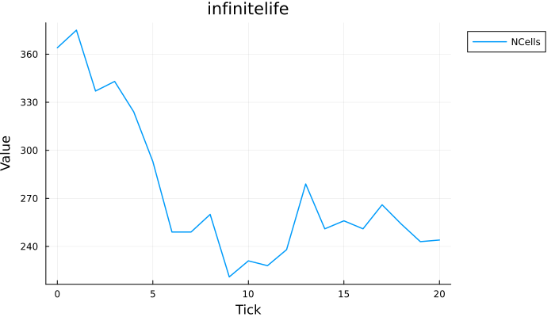
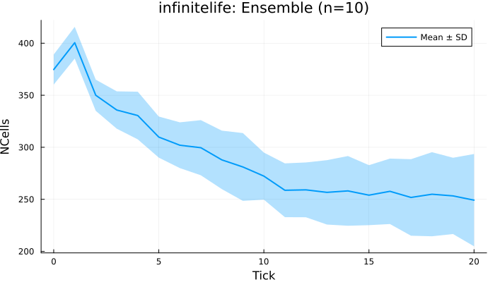
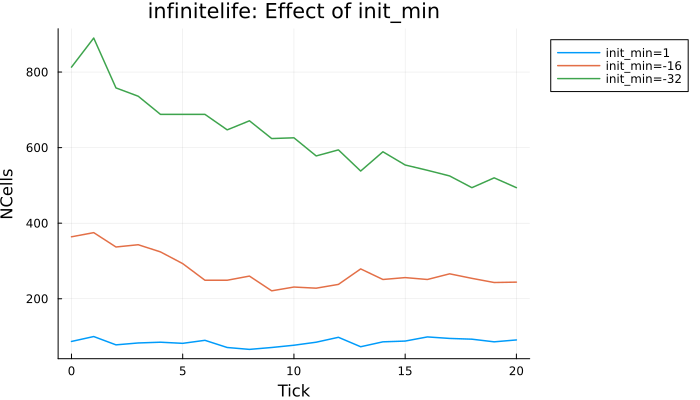

Infinite Life
Overview
WHAT IS IT?
This program is an example of a two-dimensional cellular automaton. This particular cellular automaton is called The Game of Life.
A cellular automaton is a computational machine that performs actions based on certain rules. It can be thought of as a board which is divided into cells (such as square cells of a checkerboard). Each cell can be either “alive” or “dead.” This is called the “state” of the cell. According to specified rules, each cell will be alive or dead at the next time step.
HOW IT WORKS
The rules of the game are as follows. Each cell checks the state of itself and its eight surrounding neighbors and then sets itself to either alive or dead. If there are less than two alive neighbors, then the cell dies. If there are more than three alive neighbors, the cell dies. If there are 2 alive neighbors, the cell remains in the state it is in. If there are exactly three alive neighbors, the cell becomes alive. This is done in parallel and continues forever.
There are certain recurring shapes in Life, for example, the “glider” and the “blinker”. The glider is composed of 5 cells which form a small arrow-headed shape, like this:
O
O
OOOThis glider will wiggle across the world, retaining its shape. A blinker is a block of three cells (either up and down or left and right) that rotates between horizontal and vertical orientations.
THINGS TO NOTICE
Find some objects that are alive, but motionless.
Is there a “critical density” - one at which all change and motion stops/eternal motion begins?
THINGS TO TRY
Are there any recurring shapes other than gliders and blinkers?
Build some objects that don’t die (using DRAW-CELLS)
How much life can the board hold and still remain motionless and unchanging? (use DRAW-CELLS)
The glider gun is a large conglomeration of cells that repeatedly spits out gliders. Find a “glider gun” (very, very difficult!).
EXTENDING THE MODEL
Give some different rules to life and see what happens.
Experiment with using neighbors4 instead of neighbors (see below).
NETLOGO FEATURES
The neighbors primitive returns the agentset of the patches to the north, south, east, west, northeast, northwest, southeast, and southwest. So count neighbors with [living?] counts how many of those eight patches have the living? patch variable set to true.
neighbors4 is like neighbors but only uses the patches to the north, south, east, and west. Some cellular automata, like this one, are defined using the 8-neighbors rule, others the 4-neighbors.
CREDITS AND REFERENCES
The Game of Life was invented by John Horton Conway.
See also:
Von Neumann, J. and Burks, A. W., Eds, 1966. Theory of Self-Reproducing Automata. University of Illinois Press, Champaign, IL.
“LifeLine: A Quarterly Newsletter for Enthusiasts of John Conway’s Game of Life”, nos. 1-11, 1971-1973.
Martin Gardner, “Mathematical Games: The fantastic combinations of John Conway’s new solitaire game `life’,”, Scientific American, October, 1970, pp. 120-123.
Martin Gardner, “Mathematical Games: On cellular automata, self-reproduction, the Garden of Eden, and the game `life’,”, Scientific American, February, 1971, pp. 112-117.
Berlekamp, Conway, and Guy, Winning Ways for your Mathematical Plays, Academic Press: New York, 1982.
William Poundstone, The Recursive Universe, William Morrow: New York, 1985.
HOW TO CITE
If you mention this model or the NetLogo software in a publication, we ask that you include the citations below.
For the model itself:
- Wilensky, U. (1998). NetLogo Life model. http://ccl.northwestern.edu/netlogo/models/Life. Center for Connected Learning and Computer-Based Modeling, Northwestern University, Evanston, IL.
Please cite the NetLogo software as:
- Wilensky, U. (1999). NetLogo. http://ccl.northwestern.edu/netlogo/. Center for Connected Learning and Computer-Based Modeling, Northwestern University, Evanston, IL.
COPYRIGHT AND LICENSE
Copyright 1998 Uri Wilensky.

This model is licensed under the Creative Commons Attribution-NonCommercial-ShareAlike 3.0 License. To view a copy of this license, visit https://creativecommons.org/licenses/by-nc-sa/3.0/ or send a letter to Creative Commons, 559 Nathan Abbott Way, Stanford, California 94305, USA.
NetLogo itself is free software for non-commercial use under the terms of the GNU General Public License (see full license information here).
To inquire about commercial licenses for either NetLogo or specific models from the models library, please contact netlogo-commercial-admin@ccl.northwestern.edu.
This model was created as part of the project: CONNECTED MATHEMATICS: MAKING SENSE OF COMPLEX PHENOMENA THROUGH BUILDING OBJECT-BASED PARALLEL MODELS (OBPML). The project gratefully acknowledges the support of the National Science Foundation (Applications of Advanced Technologies Program) – grant numbers RED #9552950 and REC #9632612.
This model was converted to NetLogo as part of the projects: PARTICIPATORY SIMULATIONS: NETWORK-BASED DESIGN FOR SYSTEMS LEARNING IN CLASSROOMS and/or INTEGRATED SIMULATION AND MODELING ENVIRONMENT. The project gratefully acknowledges the support of the National Science Foundation (REPP & ROLE programs) – grant numbers REC #9814682 and REC-0126227. Converted from StarLogoT to NetLogo, 2001.
Parameters
| Parameter | Type | Default | Description |
|---|---|---|---|
init_min |
Int |
-16 |
init min |
init_max |
Int |
16 |
init max |
init_density |
Float64 |
0.35 |
init density |
max_ticks |
Int |
20 |
max ticks |
Source Code
The Julia code to run this model:
using ArkModelZoo
_, trajectory = run_infinitelife()Time Series

Ensemble Runs
Ten replicates with different random seeds, showing mean ± standard deviation.

Parameter Sensitivity
Varying init_min.

Appendix: Source Code
This model is implemented in the Ark.jl Entity-Component-System (ECS) framework. The code is split into five files, each with a distinct role:
- Parameters: a mutable struct holding all configurable values.
- Components: lightweight data types attached to individual entities (agents).
- Resources: world-level shared state accessible to all systems.
- Systems: functions that operate on entities each tick, defining model behavior.
- Model: wiring that assembles the world, registers resources and systems, and provides the run entry point.
Parameters (parameters.jl)
The parameter struct uses @kwdef so that every field has a default value and can be overridden by keyword. These defaults match the original NetLogo model’s slider settings.
Base.@kwdef mutable struct InfLifeParams
init_min::Int = -16
init_max::Int = 16
init_density::Float64 = 0.35
max_ticks::Int = 20
seed::Int = 42
endComponents (components.jl)
Components are lightweight data types attached to individual entities (agents). Mutable structs hold per-entity state, while empty tag structs act as markers for the ECS query system to efficiently filter entities.
struct InfLifeDummy endResources (resources.jl)
Resources are world-level singletons shared across all systems, used for global state and aggregate statistics.
mutable struct InfLifeGrid
cells::Set{Tuple{Int,Int}}
end
InfLifeGrid() = InfLifeGrid(Set{Tuple{Int,Int}}())
mutable struct InfLifeStats
n_cells::Int
end
InfLifeStats() = InfLifeStats(0)Systems (systems.jl)
Systems contain the model logic and execute in a defined order each tick. Each system struct implements either initialize! (run once at setup) or update! (run every tick).
const INFLIFE_NEIGHBOR_OFFSETS = (
(-1, 1), (0, 1), (1, 1),
(-1, 0), (1, 0),
(-1, -1), (0, -1), (1, -1),
)
# --- Initialization ---
struct InitInfLifeSystem <: System end
function initialize!(::InitInfLifeSystem, world::World)
params = get_resource(world, InfLifeParams)
rng = get_resource(world, RNGResource).rng
grid = get_resource(world, InfLifeGrid)
stats = get_resource(world, InfLifeStats)
empty!(grid.cells)
for x in params.init_min:params.init_max
for y in params.init_min:params.init_max
if rand(rng) < params.init_density
push!(grid.cells, (x, y))
end
end
end
stats.n_cells = length(grid.cells)
return nothing
end
# --- Game of Life Step ---
struct InfLifeStepSystem <: System end
function update!(::InfLifeStepSystem, world::World)
grid = get_resource(world, InfLifeGrid)
stats = get_resource(world, InfLifeStats)
cells = grid.cells
# Count neighbors for all candidate cells
neighbor_counts = Dict{Tuple{Int,Int}, Int}()
for (cx, cy) in cells
for (dx, dy) in INFLIFE_NEIGHBOR_OFFSETS
pos = (cx + dx, cy + dy)
neighbor_counts[pos] = get(neighbor_counts, pos, 0) + 1
end
end
# Apply GoL rules
next_cells = Set{Tuple{Int,Int}}()
for (pos, count) in neighbor_counts
alive = pos in cells
if alive
if count == 2 || count == 3
push!(next_cells, pos)
end
else
if count == 3
push!(next_cells, pos)
end
end
end
# Also check live cells with 0 neighbors (they die, so no need to add)
grid.cells = next_cells
stats.n_cells = length(next_cells)
return nothing
end
# --- Termination ---
struct InfLifeTerminationSystem <: System end
function update!(::InfLifeTerminationSystem, world::World)
params = get_resource(world, InfLifeParams)
tick = get_resource(world, Tick)
stats = get_resource(world, InfLifeStats)
if stats.n_cells == 0 || tick.tick + 1 >= params.max_ticks
get_resource(world, Terminate).stop = true
end
return nothing
endModel (model.jl)
The model file assembles all pieces: it creates the ECS World with the required component types, registers resources, builds the Scheduler with systems in execution order, and exposes the public run entry point. The observer pattern records the trajectory each tick.
function infinitelife_world(; initial_capacity::Int = 128)
return World(InfLifeDummy; initial_capacity = initial_capacity, allow_mutable = true)
end
function infinitelife_systems()
return (
InitInfLifeSystem(),
InfLifeStepSystem(),
InfLifeTerminationSystem(),
)
end
function infinitelife_model(params::InfLifeParams = InfLifeParams())
world = infinitelife_world()
_add_standard_resources!(world, params)
add_resource!(world, InfLifeGrid())
add_resource!(world, InfLifeStats())
scheduler = Scheduler(world, infinitelife_systems())
initialize!(scheduler)
return scheduler
end
struct InfLifeObserver end
function infinitelife_headers(::InfLifeObserver)
return ["NCells"]
end
function infinitelife_values(::InfLifeObserver, world::World)
stats = get_resource(world, InfLifeStats)
return Float64[stats.n_cells]
end
function run_infinitelife(; params::InfLifeParams = InfLifeParams(), observe::Bool = true)
return _run_model(infinitelife_model, InfLifeObserver(), infinitelife_values; params, observe)
end